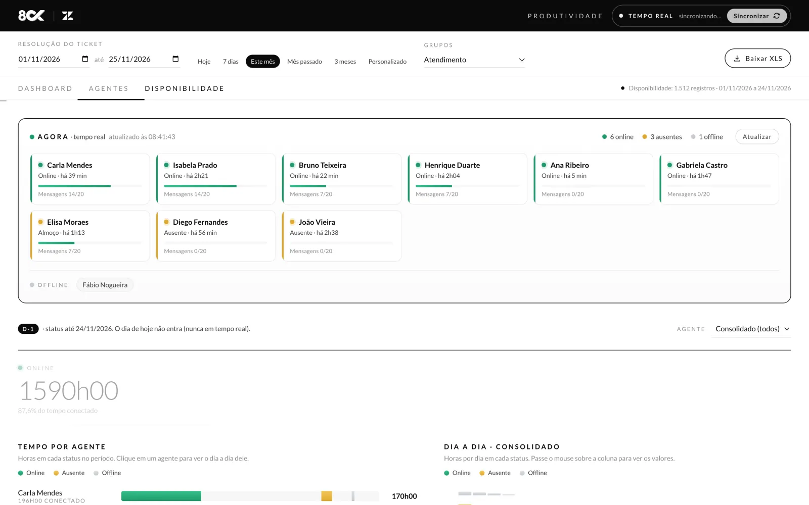

8CX Produtividade
Resolvidos, interações, CSAT, SLA e disponibilidade de cada agente, lidos direto do Zendesk na hora em que você abre a tela. Sem montar relatório e sem esperar o dia seguinte.

Números lidos direto do Zendesk na hora
Por agente, com meta e quem está fora dela
1ª resposta e resolução de cada agente
Tudo exportável para Excel com um clique
Relatórios de produtividade do time em tempo real, dentro do Zendesk.
O mês do time numa tela só.
Tickets resolvidos, interações (comentários públicos, internos e atualizações de campo), CSAT da equipe e quantos agentes estão na meta, com filtro por período e grupo.
- Produtividade por agente em barras
- CSAT por agente com a linha da meta
- Clique numa barra e veja os tickets que geraram o número
- Períodos prontos: hoje, 7 dias, mês, mês passado, 3 meses
Quem está online agora, e por quanto tempo.
Veja quem está online, ausente ou offline neste minuto, há quanto tempo e quantas conversas cada um atende. No histórico, as horas em cada status e o dia a dia.
- Status ao vivo de cada agente
- Horas online, ausentes e offline no período
- Primeira e última conexão do dia
- Consolidado ou agente por agente

Tabela por agente
Resolvidos, interações, tickets trabalhados, CSAT e SLA lado a lado.
SLA por agente
Percentual no prazo de 1ª resposta e de resolução.
Filtro por grupos
Escolha os times que aparecem no painel.
Drill-down
Do número ao ID do ticket em um clique.
Exportação
Dashboard, agentes e disponibilidade em Excel.
Roda no Zendesk
App na barra lateral, com o acesso de quem já usa o Zendesk.
A 8CX instala, configura e acompanha.
Conversa
Entendemos a sua operação e mostramos o 8CX Produtividade funcionando com dados de exemplo.
Implantação
Instalamos o app no seu Zendesk e configuramos as regras com o seu time.
Hypercare
Duas semanas de acompanhamento depois do go-live para ajustar o que for preciso.
Vamos conversar sobre o 8CX Produtividade?
Clique e fale com a 8CX no WhatsApp. A mensagem já vai escrita:
“Olá! Vim do site da 8CX e queria saber mais sobre o 8CX Produtividade.”conversa ↗